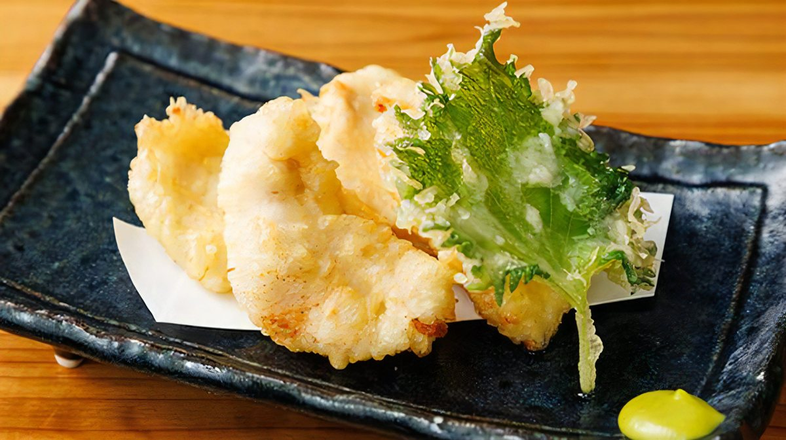
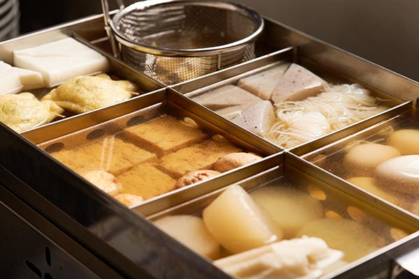
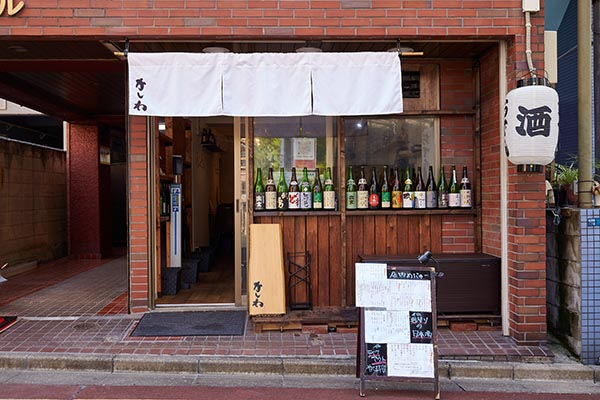
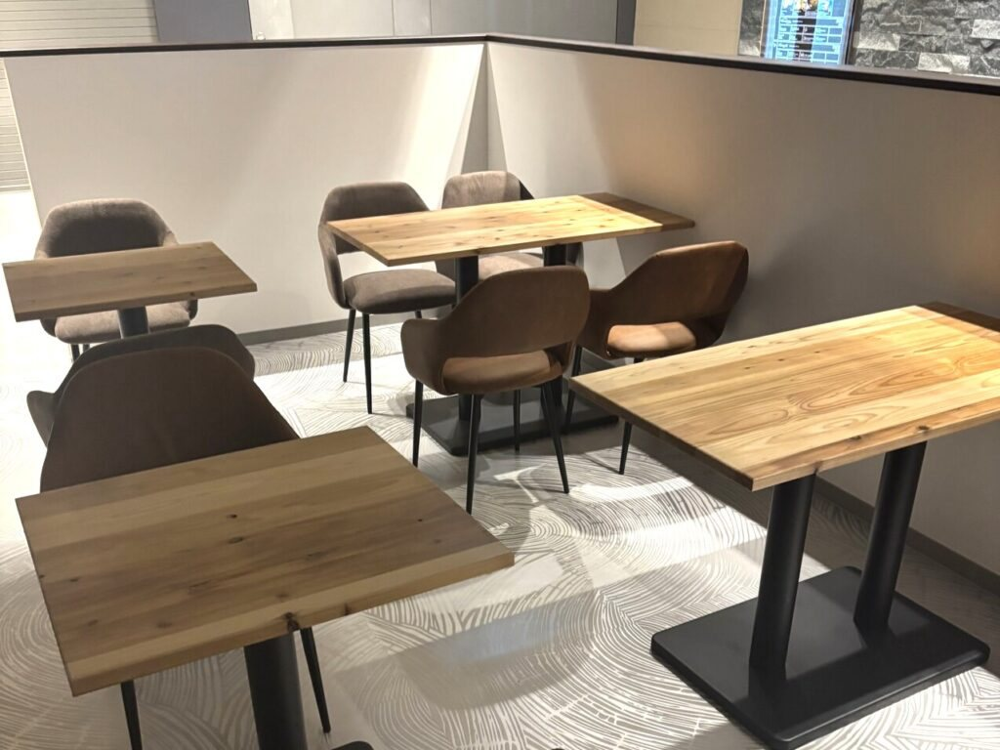

天ぷらとおでんと日本酒 かしわ 西新宿店
名物のとり天とおでんを、全国各地の日本酒と。カウンター席とテーブル席で全30席です。
- 電話番号
- 050-5448-4351
- 住所
- 東京都新宿区西新宿1-18-5 中沖ビル 1F
- 営業時間
- 平日 ランチ 11:30〜13:30
平日 ディナー 17:00〜23:30
土・日・祝 14:00〜21:30（L.O.21:00） - 定休日
- 不定休
- アクセス
- 新宿駅南口 徒歩2分

代々木のほかに、新宿、高田馬場、浜松町、東高円寺にお店があります。

名物のとり天とおでんを、全国各地の日本酒と。カウンター席とテーブル席で全30席です。
とり天と関西風のおでんが自慢の店です。少人数の宴会から貸切まで、全25席でご利用いただけます。

サクッと揚げたとり天と、旨みたっぷりのおでんが楽しめる居酒屋です。店主選りすぐりの日本酒や大分焼酎と一緒にどうぞ。

おひとりでも仕事帰りでも入りやすい店です。カウンター席とテーブル席に半個室もあり、最大30名様の貸切も承ります。
駅前の地下にある、全16席の隠れ家のような天ぷら居酒屋です。遅い時間まで営業しています。